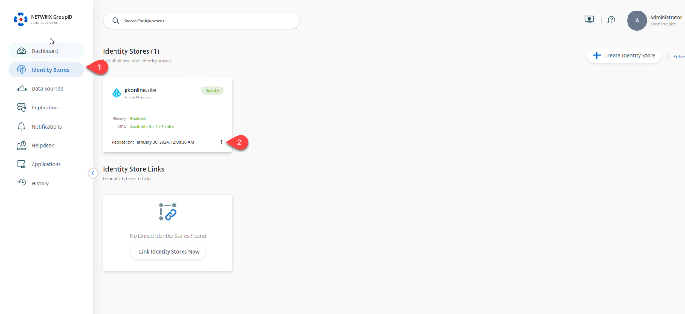
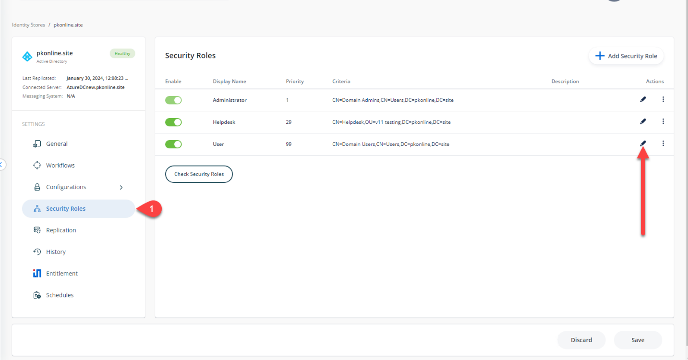
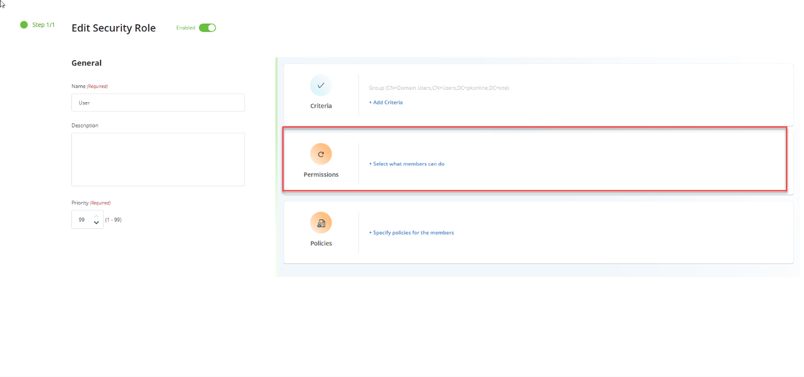
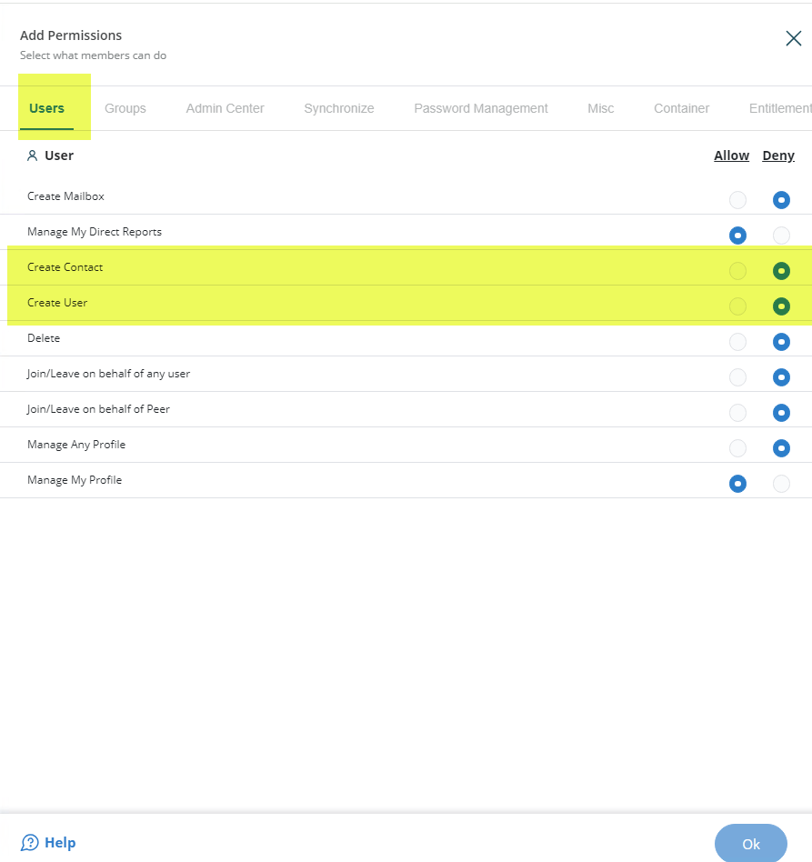
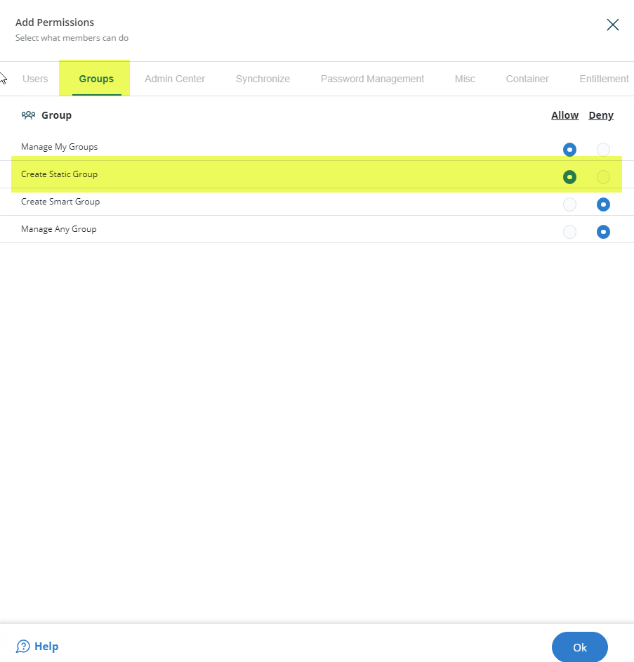
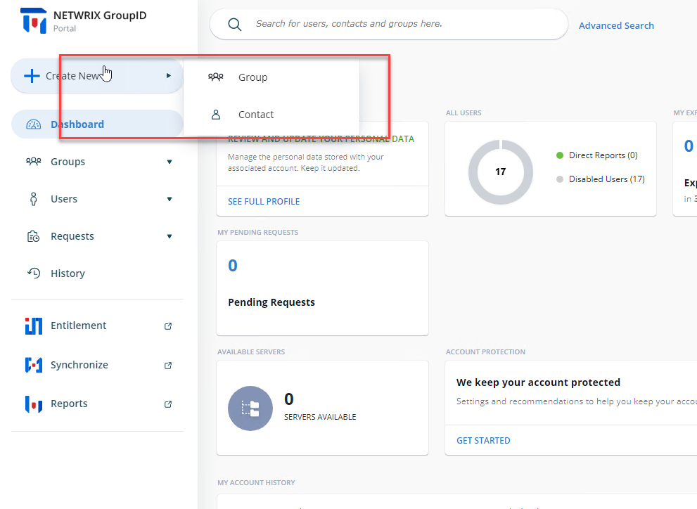

Applies To:
Directory Manager 11
Overview
This article provides instructions for configuring a security role in Directory Manager 11 to allow users to create only group and contact object types through the User portal. By modifying the role’s permissions, you can prevent users from creating other object types, such as users and mailboxes, to align with your organization’s security and management policies.
Instructions
To grant or deny permission to create specific objects in the Directory Manager User portal, follow these steps:
-
Open the Directory Manager Admin Portal at
https://servername/AdminCenter/. Navigate to Identity Stores. Under an identity store's name, click the three dots (...) to edit it.
 -
In the identity store's properties, click the Security Roles tab.
Select the role you want to modify and click Edit.
 -
On the Role Properties page, click the
Permissions tab.
 -
The Create permissions for the User portal are shown in the following
images:

 - Select the Allow option for Group and Contact object types to permit creation. Select the Deny option for all other object types to restrict creation.
- Click OK to save your changes.
When you allow the role to create groups and contacts using the portal,
the result will look like this:
